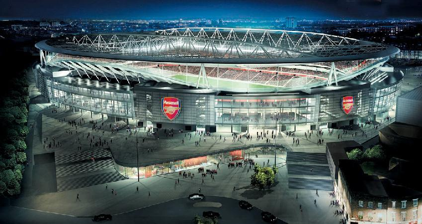

Az Arsenal Football Club (röviden Arsenal, The Arsenal vagy az Ágyúsok) angol profi labdarúgócsapat Holloway-ben, Észak-Londonban. A Premier League-ben játszanak, és az egyik legsikeresebb klub az angol labdarúgásban 13 First Division és Premier League címmel és 13 FA Kupával.
Világ- és Európa-bajnok. 123-szoros francia válogatott és 51 találatával a nemzeti csapat gólrekordere. UEFA-bajnokok ligája-győztes, UEFA-szuperkupa-győztes,a FIFA-klubvilágbajnokság győztese, ezenkívül kétszeres angol és kétszeres spanyol valamint kétszeres amerikai bajnok. Henry az egyelten olyan játékos aki hárszomszor lett az év labdarúgója az FWA szavazásán. (2003, 2004, 2006).
Dennis Nicolaas Maria Bergkamp (Amszterdam, 1969. május 10.) korábbi holland válogatott labdarúgó, általában támadó szerepkörben játszott. Szülei is nagy futballrajongók voltak, állítólag a Manchester United híres skót játékosáról, Denis Lawról nevezték el gyermeküket.
Tony Alexander Adams (Romford, 1966. október 10. –) visszavonult, 66-szoros válogatott angol labdarúgó, az Arsenal legendás jobbhátvédje. Az Arsenallal elért, 2002-es bajnoki cím és kupagyőzelem után Adams visszavonult az aktív játéktól. 668 Arsenal-színekben lejátszott mérkőzésén 48 gólt szerzett. Nála több meccset csak David O'Leary mondhat el többet. A "Mr Arsenal" becenév méltán lett Adamsé.
| Név | Bajnokság | Kupák | Összesen | |
|---|---|---|---|---|
| 1 | Thierry Henry | 176 | 53 | 229 (370) |
| 2 | Ian Wright | 128 | 57 | 185 (288) |
| 3 | Cliff Bastin | 150 | 28 | 178 (396) |